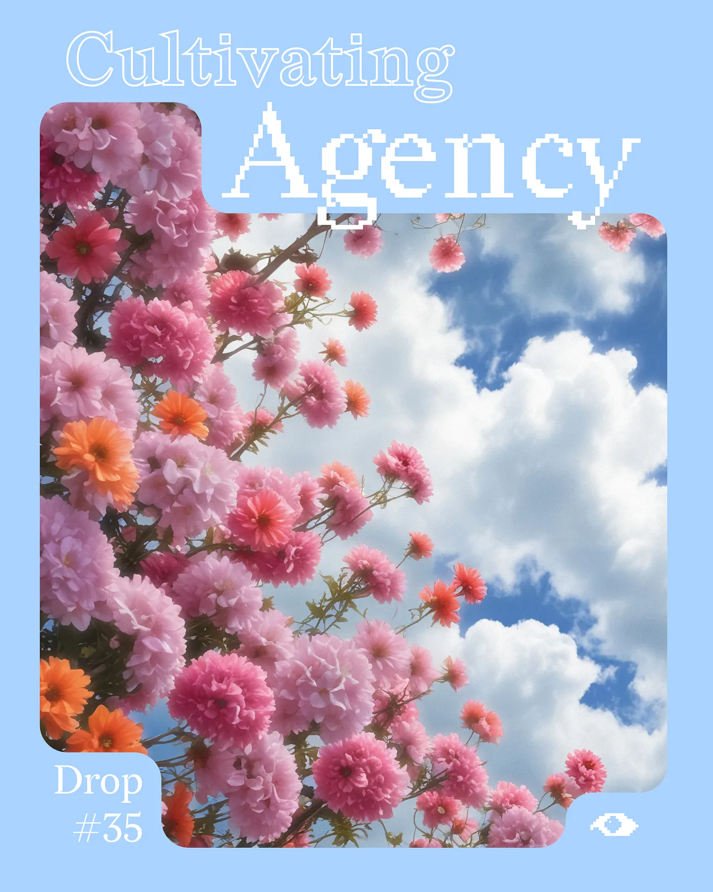

Drop #35 · June 20, 2025 · 6 min read
An Introduction to nCHANT #01
Hey everyone (▰˘◡˘▰)
Welcome back to DROPS, REINCANTAMENTO's newsletter.
We are super happy to announce that the pre-orders of nCHANT have quickly exceeded our first print. Thank you to everyone who supported this project - it means everything to us.
We're going into a second print but this means shipping will be delayed until mid-July. Bear with us.
As thanks for your patience, we're releasing the introduction to nCHANT #01. Consider it a preview of what's inside. The text has been edited by Jeein and Christopher Dake-Outhet.
Continue supporting nCHANT by ordering the magazine on Metalabel, subscribing to our newsletter with a special discount with the button below, or supporting our work by making a donation through Ko-fi.

As REINCANTAMENTO explores the intricate relationship between technology, radical imagination, and rituals, it is only natural that our discourse on digital gardens moves from screen to print for the inaugural volume of nChant.
The concept of digital gardening was a major turning point in defining our practice: a way of archiving and cultivating an endless visual stream of impressions gathered from strolls online to even inspire the aesthetic of the project's website. Hence, the term itself points to the structural nature of conceptualization that transforms the abstract into something intelligible, actionable, and traceable.
Yet, the sprint of technological mutations, accelerating with promises of now for tomorrow, seems to have influenced the widespread adoption of the term. In one definition, digital gardens are said to be an attempt to think together, in public, but isn't this what social media was supposed to do? Or blogs? Or forums? Or the internet itself?
Where, then, are we to find the context for a digital garden to be renewed in its meaning? How far have we gone, or where did we come from? The 90s, many say, often described as a time when the spirit of rose-tinted memories and distinct feelings of freedom permeated the early Web, so different from what it became.
The language we use to talk about our online experience is dense with metaphors like "the web", "feed", "mouse", "page", and "browse". Despite being very recent linguistic changes, these metaphors are already dead, their meaning crystallized to a static referent. Other times, metaphors are shrouded in ambiguity, hesitating from convenience. In such moments, we enter into the realm of analogies, possibility, and mystery in the play of symbolic language. Therein we find digital gardens.
To be a digital gardener is a way to nurture a web page of your own - a space for desire and expression, for autonomous forms of knowledge organization. Everything that the hegemony of commercial platforms continues to short-circuit and asphyxiate. Gardens as a site of peace and relaxation, an exclave in the society of push notifications. Gardens as fields of seeded ideas, of unfinished thoughts resting and waiting for their time to come. Entities that inhabit it flourish, die, and are born again. Online, thoughts and texts can follow a similar approach.
However, more than the phenomenon of digital gardens itself, here we are trying to grasp the desires that are produced through this metaphor. After all, phantasies, hopes, omissions, and beliefs are constitutional in technological evolutions.
This journey toward understanding began with our video essay "Harvesting the Net: A Tale of Digital Gardening", first exhibited in December 2023 as part of Codici Magici at MO.CA in Brescia. Following its reception, we felt compelled to investigate further how people actually experiment with this concept in their pursuit of technological agency.
In our framework of re-enchantment, digital gardens represent attempts to recover wonder and agency in our relationship with digital tools: spaces where the mystery inherent in technology can be cultivated rather than obscured by corporate design.
The allure of gardens is multifaceted and political. Fundamentally, gardens have always carried a political subtext, from being imperial collections of plants to being sites of resistance and urban guerrilla. So, what kind of gardens do we want to build online? Glimpses of the future are refracted through this concept. Collective speculations like these can serve as vectors of organization. With this issue, we take these imaginary visions seriously and investigate them.
This journey begins at Trust. Trust remains a guiding force in many of our practices, research, and work – and in this spirit, it was only natural to enter into a dialogue with the community centered on the topics of this research. The result is a research report, co-authored with Christopher Dake-Outhet, compiled from 20 interviews with Trust's members and adjacent practitioners, including writers, artists, developers, and educators.
Discussing shared first memories of the Internet, archival obsessions, botanical experiments, and more, the research aims to shed light on Trust collective's understanding of the present and the future of digital gardens, in the frame of attempts at utopian conspirations and reforms of the Internet.
Following the report, On Digital Gardens collects a series of contributions from usual collaborators and new friends, expanding and iterating themes of gardening, desires, and knowledge systems.
We have Simone Robutti's take on Notion, the popular productivity software that is also used to create personal digital gardens. With his typical pragmatic wit, Simone takes us on a fractal exploration of Notion.
With Federico Poni's contribution, we weave the analog magazine that you're holding in your hands and the digital space. Poni offers a Python script to set up a self-hosted digital garden, plus the essential README document that guides us through the process.
Marco Mattei and Elisa Carini, who recently started the collaborative writing experiment (Conversation) On Desire, extend their conversation in this contribution. Starting by watching our video essay Harvesting The Net, they flow in a delicate dialogue on gardens as sites of desire.
Finally, Edin Barbi Cinti's work carries us to a spatial analysis of a garden, as part of a broader research project at Politecnico di Torino. Edin offers a glimpse into the planner's perspective when examining the impact of natural spaces on human practices.
WE HOPE THAT WITH THIS ISSUE AND THROUGH TIME, nCHANT CAN FUNCTION AS AN OBLIQUE, ANTI-DISCIPLINARY OPTICAL MACHINE TO STARE INTO UNUSUAL IDEAS AND EXAMINE THE MEMBRANE BETWEEN CULTURE AND TECHNOLOGY.
I want to sincerely thank the Trust Fund for supporting this issue, each Trust member who lent us their time for a conversation, and all the contributors for their valuable work. A profound gratitude to Giorgio Craparo for taking care of the design and layout of this issue and to Christopher for his refined research approach. And once more, a heartfelt word to the team that worked on the video essay: Anna Fasolato, Jeein, Stranding Production, and Kinked.
It is also impossible to ignore the tragedies of the world unfolding every day at the time of this publication. We stand in eternal solidarity with the oppressed of Palestine, Ukraine, Sudan, DRC, Kurdistan, and everywhere where forces of control are crushing the right to live of the people. At one of the many protests around the world, a sign declares: "Killing the flowers will not delay spring". In times darker than ever, we can only resort to the optimism of the will. Spring will come.
AYL, Berlin 31 May 2024
Revised for first reprint, 17 June 2025